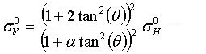
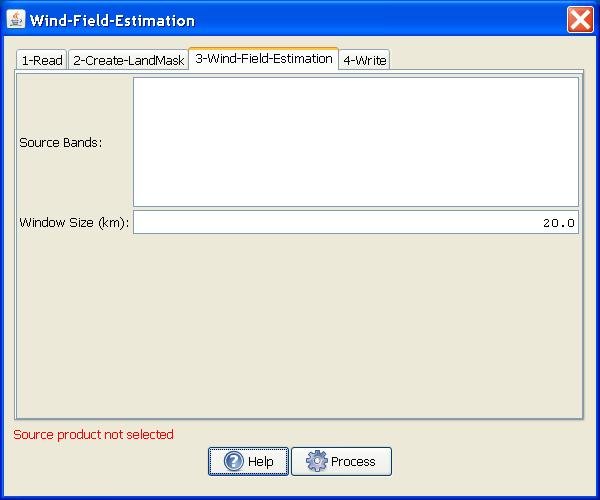

Wind Field Estimation
As the wind blows across the ocean
surface, it generates surface roughness generally aligned with the wind
direction. Consequently the radar backscatter from this roughened
surface is related to the wind speed and direction. This operator
retrieves wind speed and direction from C-band SAR imagery.
Major Processing Steps
The general approach for the wind field retrieval is as the follows:
- First a land-sea mask is generated to ensure that the estimation is focused only on the sea surface area.
- Then the SAR image is divided into grid using user specified window size.
- For
each grid, a wind direction (with 180° ambiguity) is estimated from
features in the SAR image using a frequency domain method.
- With
the wind direction estimated for the grid, finally the wind speed is
estimated by using CMOD5 model for the Normalized Radar Cross Section
(NRCS).
For details of land-sea mask generation, the reader is referred to the Create Land Mask operator.
Wind Direction Estimation
The wind direction is estimated from the features in the SAR image.
Detailed steps for the estimation are given below:
- For
each window within which a wind direction will be estimated, a local
FFT size is determined. The FFT size is 2/3 of the window size,
therefore four spectra can be computed in the window with each
spectra region has a 50% overlap with the neighboring spectrum.
- Each window is flattened by applying a large average filter, then dividing by the filtered image.
- The FFT’s are applied and the four resulting spectra are averaged.
- An
annulus is applied to the spectrum to zero out any energy outside of a
wavenumber region. The limits of the annulus are set to wave lengths of
3 km to 15 km.
- A 3x3 median filter is then applied to the spectrum to remove noise.
- A
2D polynomial is fit to the resulting spectral samples and the
direction through the origin which has the largest quadratic term (i.e.
the widest extent) is determined. The wind direction is then assumed to
be 90 degree from this direction.
Wind Speed Estimation
- The wind speed is estimated using the CMOD5 model for NRCS developed by Hersbach et al.
[1] for VV-polarized C-band scatterometry.
- For ENVISAT HH-polarized product, where CMOD5 model is not directly
applicable, the operator first converts the NRCS at HH polarization
into a corresponding NRCS for VV polarization with the following
equation, then applies the CMOD5 model to the converted NRCS:

where θ is the incidence angle and α is set to 1.
For details of the CMOD5 model, the readers are referred to [1].
Products Supported
- The
operator now is only supported for ERS and ENVISAT (VV- and
HH-polarized) products. The source product is assumed to have been calibrated
before applying the operator.
Parameters Used
The following parameters are used by the operator:
- Source Bands: All bands (real or virtual) of the source product.
User can select one or more bands for producing multi-looked images. If
no bands are selected, then by default all bands are selected.
- Window Size: The dimension of a window for which wind direction and speed are estimated.

Figure 1. Wind Field Estimation dialog box
Visualize Estimated Wind Direction
To view the estimated wind directions, the following steps should be followed:
- Bring up the image.
- Go to layer manager and add layer called "Wind Field Estimation Results".
Then
wind directions will be displayed as shown in the example below. Note
that the wind direction is indicated by double headed arrows because a 180°
ambiguity exists in the estimated wind direction. Also for those grids
in which land pixels are found, the wind directions are not estimated and
hence not displayed.
Figure 2. Example of wind direction display
Wind Field Retrieval Result Report
The
wind field estimation results are saved into an xml file
.nest/log/wind_field_report.xml with the following information given
for each window in which wind estimation is made:
- lat: Latitude of the central point in the window.
- lon: Longitude of the central point in the window.
- speed: Estimated wind speed in m/s.
- dx: X component of the estimated wind vector.
- dy: Y component of the estimated wind vector.
- ratio: In estimating wind direction, the spectrum of a given window is matched with a 2D polynomial (like f(x,y) = ax2 + bxy + cy2
+ dx + ey +f). The ratio in the report is the ratio of the minor semi
axes over the major semi axes of the 2D polynomial. Generally
speaking, the smaller the ratio value, the more reliable the
estimated wind direction.
Reference:
[1] H. Hersbach, CMOD5, “An Improved Geophysical Model Function for ERS
C-Band Scatterometry”, Report of the European Centre Medium-Range
Weather Forecasts (ECMWF), 2003.
[2] C. C. Wackerman, W. G.
Pichel, P. Clemente-Colon, “Automated Estimation of Wind Vectors from
SAR”, 12th Conference on Interactions of the Sea and Atmosphere, 2003.